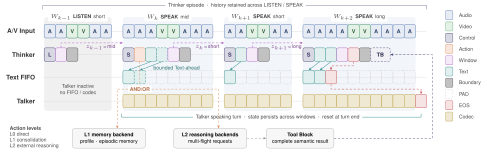

AdaptDuplex
From static to adaptive full-duplex spoken dialogue
One episode, window by window
A scripted conversation drawn with the paper's protocol. Timing and tokens are illustrative.
User
AdaptDuplex
Abstract
Full-duplex spoken dialogue requires simultaneous listening and speaking at sub-second latency, under conversational timing and cognitive demands that change moment to moment. Yet current models mostly impose static operating points, lacking a systematic mechanism for adaptive decisions. We present AdaptDuplex, which extends Qwen3-Omni with such a mechanism, co-designed across three layers. A compact token-level protocol represents every window as a canonical sequence, trains dual-stream alignment through a bounded text lead over speech, and exposes every behavioral decision as an explicit token for training-free runtime control via logits bias. Adaptive mechanisms dynamically predict among discrete window durations and augment direct response as needed with non-blocking cognitive consolidation and multi-flight external reasoning. A progressive pipeline introduces these behaviors through a three-stage Thinker curriculum, then Talker-only and joint SFT, with GRPO as a preliminary increment. On Full-Duplex-Bench v1 and v1.5, AdaptDuplex outperforms DuplexOmni on 18 of 21 comparable turn-taking, overlap-behavior, and timing metrics and MiniCPM-o 4.5 on 19 of 22, with gains in both interaction decisions and response timing. On human-recorded HumDial-FDBench, it attains the top Final score (69.6) of the compared duplex models.
- 18 / 21
- Comparable Full-Duplex-Bench v1 and v1.5 metrics where AdaptDuplex beats DuplexOmni
- 19 / 22
- Comparable metrics where it beats MiniCPM-o 4.5
- 69.6
- HumDial-FDBench Final score, the highest among the compared duplex models
- −78%
- Protocol tokens per window versus JSON serialization (26.44 to 5.87)
- 0.34 s
- Response latency after a genuine interruption on FDB-v1.5, on one H100
Every behavioral decision is an explicit token
AdaptDuplex keeps the Thinker–Talker architecture of Qwen3-Omni-30B-A3B, but the Thinker now makes an interaction decision in every window, with reply text as an optional output. A compact token protocol, adaptive window and action mechanisms, and a progressive training pipeline are designed together around that one principle; details are in the paper and the online appendix.

Move the operating point
Every variant in Table 4 of the paper on FDB-v1.5, compared against the default system: Curriculum SFT, dynamic windows, no logit bias. Choose one change at a time.
Behavior: 1 for Respond (interruption) or Resume (other scenarios), 0.5 for Uncertain, 0 otherwise. Yield is interruption stop latency; Hold is the mean stop latency over the three non-interruption scenarios; Response is the mean over all four.
Benchmarks
Full-Duplex-Bench v1 and v1.5 follow their official scoring and transcription; HumDial-FDBench is human-recorded Chinese and English. All three duplex systems stream on a single H100, so latencies include computation. No benchmark scripts, audio or speakers enter data generation.
AdaptDuplex holds back a full turn more often than DuplexOmni when only a backchannel is due (takeover rate 0.334 vs. 0.491) and takes the floor when a turn is actually due (smooth-turn TOR 0.982 vs. 0.193). On interruptions it is both more accurate and faster.
TOR: takeover rate. Syn./Can.: synthetic and Candor pauses. Frequency in events per second. GPT-4o scores (0–5) and latencies (s) are conditional on takeover; negative per-sample latencies are clipped to 0. ‡ All samples negative, excluded from bold. † Published results, latencies not hardware-matched. Bold marks the best value in each row.
Under genuine interruptions and other overlap, AdaptDuplex has the lowest response latency among native duplex systems in every scenario, and resumes far more reliably than DuplexOmni under backchannels (0.55 vs. 0.28) and background speech (0.43 vs. 0.07).
Behavior is 1 for Respond (interruption) or Resume (other scenarios), 0.5 for Uncertain (talking to others, background speech), 0 otherwise. –: no qualifying event. † Published results, latencies not hardware-matched. Bold marks the best value in each row.
On human recordings at the same operating point, AdaptDuplex has the highest Final score of the compared duplex models, with delays of 0.835 s in Chinese and 1.345 s in English. The half-duplex Qwen3-Omni+VAD is more accurate at interruption; AdaptDuplex is more accurate at rejection.
NR: not reported. ALL pools ZH and EN under the official protocol. Int./Rej.: averaged subscenario scores; Delay: combined applicable latency types. D-Score: official logarithmic normalization of ALL Delay. Final = 0.4 Int. + 0.4 Rej. + 0.2 D-Score. † From the HumDial-FDBench paper. Bold marks the best value in each row.
What is still open
Limitations
- Evaluation covers Chinese and English only.
- The window controller picks among three discrete durations, not a continuous horizon.
- External reasoning is capped at four concurrent requests.
- General-ability retention after duplex adaptation, and end-to-end L1/L2 evaluation with real backends, remain to be measured.
Next
- Continuous window prediction.
- More languages.
- Adaptive concurrency limits.
- Training and evaluation with visual inputs.
- Multi-party conversation.
Cite
@article{zhou2026adaptduplex,
title = {AdaptDuplex: From Static to Adaptive Full-Duplex Spoken Dialogue},
author = {Zhou, Zhiyang and Shang, Yingxin and Wang, Zhou and Cai, Hongwei and
Wang, Weixu and Zhou, Shuran and Zhao, Shuofeng and Fan, Wenke and
Guo, Qingxiang and Yang, Dawei and Yang, Lin and Song, Yang},
journal = {arXiv preprint arXiv:2609.29217},
year = {2026}
}